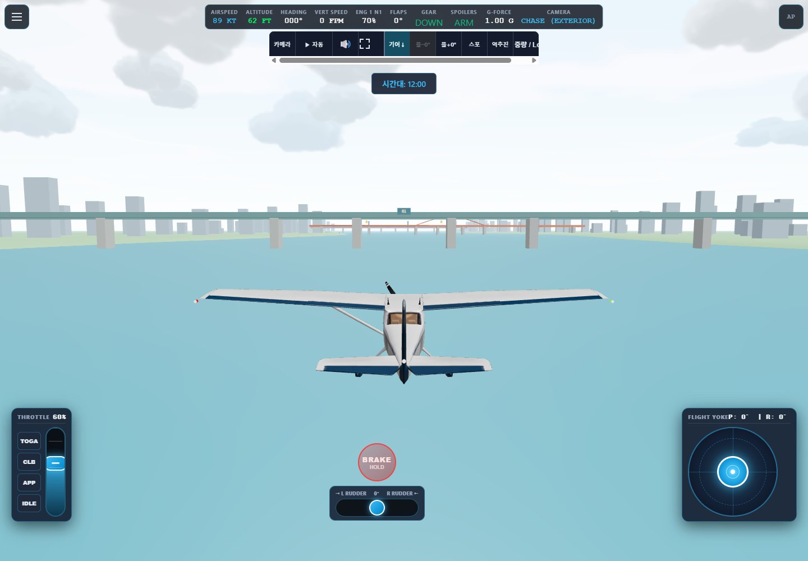
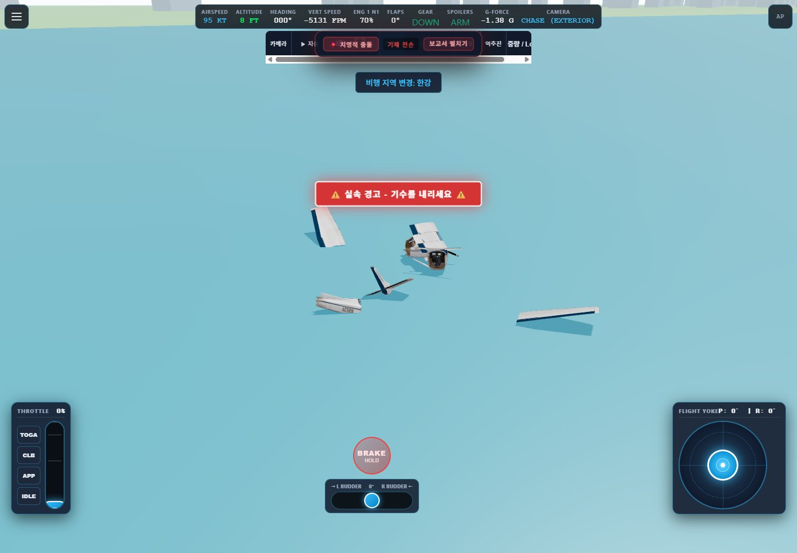
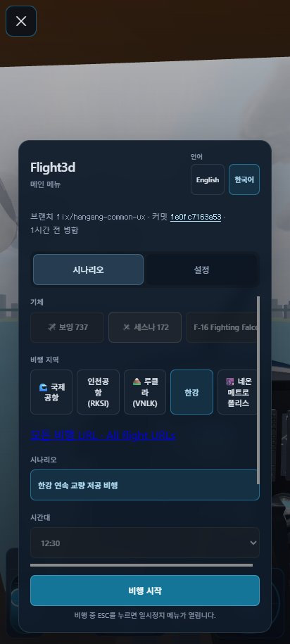

Figma 기본 화면 설명과 비교하는 PR 검토용 문서입니다. Figma Starter 도구 호출 한도가 계속되어 새 페이지 생성은 미완료입니다. 아래 캡처는 2026-10-29 검증 시점의 화면이며, 최신 main의 저녁 조명·GLB 배경을 재촬영한 결과는 아닙니다.
기본 화면 설명 (Figma) · 공통 Flow (Figma)

기존 코드를 근거로 전용 패널을 재구성한 비교도. 기존 상태의 실캡처는 아닙니다.
교량 카운트·단계·중복 안내·유지율·최소 여유·전용 다시 도전 제거. 내부 물리·접촉 판정 유지.
공통 일시정지 UI를 배경 위에 재구성한 설명도.
전용 재도전 버튼 없이 공통 메뉴의 기존 기능 사용.

접촉 판정·충돌 효과·보고서 펼치기/접기는 공통 동작.

Space / R / Enter는 즉시 재시작이 아니라 메뉴 복귀입니다.
| 항목 | 수정 후 |
|---|---|
| 메뉴·계측·조작·일시정지·충돌 보고서 | 다른 시나리오의 공통 컴포넌트와 흐름 사용 |
| 교량 카운트·유지율·여유·단계 패널·전용 재도전 | 전부 제거 |
| C172·코스·바람·조명·GLB 장면·접촉 검사 | 시나리오 설정과 물리 구현 유지. main의 저녁 조명·장면 갱신도 충돌 해결 시 보존. |
| Figma 저공 비행 UX 페이지 | 한도 문제로 생성 대기. 존재하지 않는 페이지 링크를 PR에 추가하지 않음. |